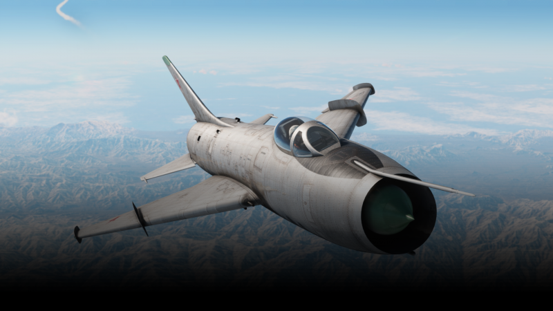
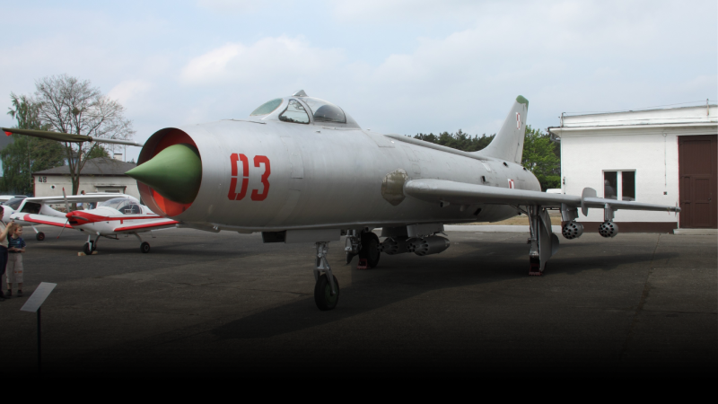
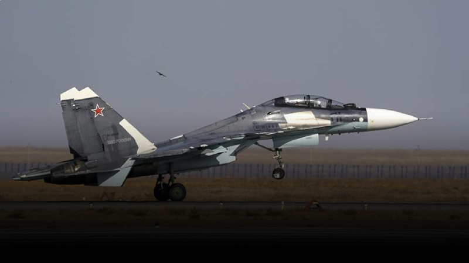
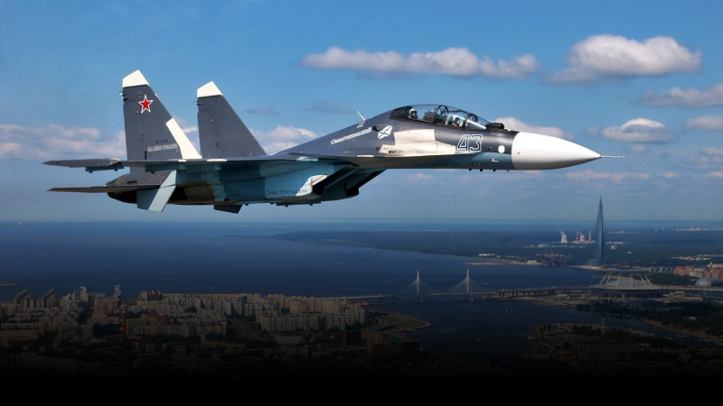
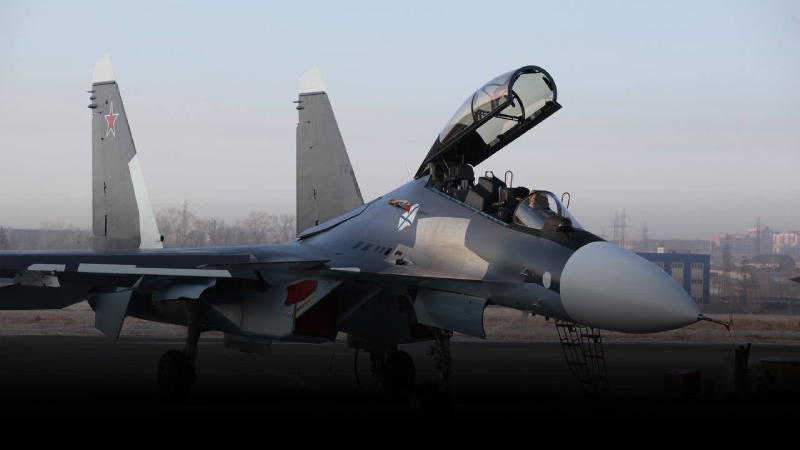
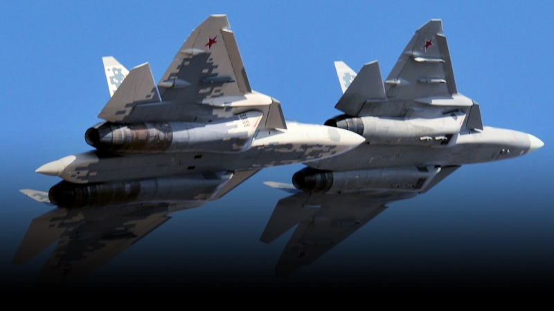
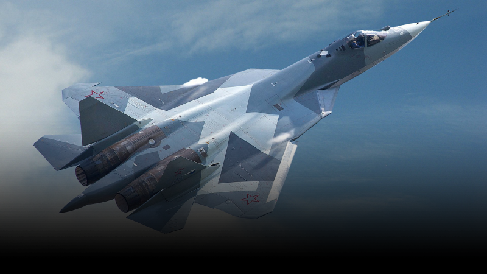
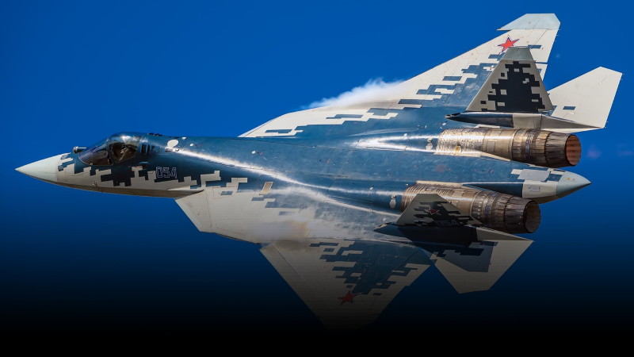

Советский реактивный истребитель со стреловидным крылом, разработанный в 1950-х годах в ОКБ-51 Павла
Сухого.

Су-7
Всего было произведено 1 848 Су-7 всех модификаций, из которых 691 самолёт был поставлен на экспорт в
9
стран мира.

Су-7
Истребители Су-7 эксплуатировались в частях ВВС и ПВО СССР на Дальнем Востоке до 1966 года.
Авиационные
части, на вооружении которых стоял истребитель Су-7, базировались на аэродромах Воздвиженка и
Спасск-Дальний (Хвалынка) Приморского края
Короче, самолет Су-7 бомбическая машина, выжигающая небо! ОКБ Сухого сделало вот эту штуку на
самом деле, мощную и стильную.
Типа этот самолет полностью преобразил понятие о боевой эффективности в свое время. Независимо от того, была
ли это атака наземных целей или воздушный бой, Су-7 был просто бомбическим королем.
Он имел типа вот такую крутейшую скорость и маневренность, так что практически ничто не могло убежать от
него. Вооружен до зубов, короче. Этот самолет мог нести различные типы ракет и бомб, нанося невероятные удары
против врагов.
Да и защита этой машины была типа всеми частями тела! Большинство поверхностей было защищено броней, а
улучшенная система радара увеличивала шансы на выживание в форменных условиях.
В общем, Су-7 был таким типа драконом в небе, который можно было положить на плечи своей страны. Это был
крутой самолет, созданный ОКБ Сухого, и его вклад в авиацию непереоценен.

Су-30СМ2
Су-30 предназначен для уничтожения воздушных целей днём и ночью, в простых и сложных метеорологических
условиях, а также на фоне земли при применении активных и пассивных помех, контроля воздушного
пространства, блокирования аэродромов противника на большой глубине и действий по наземным и морским
объектам

Су-30СМ2
Су-30 также возможно использовать для управления групповыми боевыми действиями при завоевании
господства
в воздухе, уничтожения десантов противника в воздухе, а также для ведения воздушной разведки и
уничтожения наземных целей в простых и сложных метеорологических условиях

Су-30СМ2
Модификация Су-30СМ для ВВС России. Установлены новые двигатели АЛ-41Ф1С от Су-35С с управляемым
вектором тяги. Установлена модернизированная РЛС, часть БРЭО унифицирована с БРЭО самолёта Су-35С.
Расширена номенклатура применяемого вооружения. Первый полёт февраль 2021 года.
Су-30СМ2 имеет вот такой вот невероятный потенциал в воздушных боях над полем битвы. Эта машина способна
выполнять многочисленные задачи как в воздухе, так и на земле. Она оснащена передовыми системами авионики,
компьютеризованным управлением и активной радиолокационной системой.
Су-30СМ2 отличается от своих предшественников интеграцией передовых электронных систем и совершенствованных
оружейных систем. Она может носить разнообразное вооружение, включая ракеты воздух-воздух и воздух-земля,
бомбы
и наводимые ракеты.
Короче, Су-30СМ2 обладает просто невероятными маневренными характеристиками, позволяющими ей выполнять
различные акробатические фигуры, включая векторное управление тягой. Это делает этот самолет неприступным и
опасным для врагов.
Су-30СМ2 является одним из наиболее продвинутых истребителей своего поколения. Его мощные двигатели,
передовая электроника и возможность выполнять самые сложные задачи делают его незаменимым инструментом на поле
боя.

Су-57
Российский многоцелевой истребитель пятого поколения созданный ОКБ имени П. О. Сухого в рамках
комплексной целевой программы «ПАК ФА».

Су-57
В мае 2001 года стартовала программа ВВС России по разработке истребителя 5-го поколения —
перспективного авиационного комплекса фронтовой авиации (ПАК ФА) (программа «И-21»). Предварительный
проект готовился вторую половину 2001 — начало 2002 годов. До августа 2017 года самолёт был известен
под индексом Т-50, который с 2008 года был и заводским индексом согласно конструкторской документации.

Су-57
Первый полёт Т-50 совершил 29 января 2010 года. В 2013 году началось мелкосерийное производство
самолётов на КнААЗе (где проводилась сборка опытных образцов) для испытания вооружений. Летом 2019
года запущено серийное производство истребителя; планируется контракт на поставку 76 самолётов,
которыми полностью укомплектуют 3 полка. 25 декабря 2020 года ВКС РФ получили первый серийный
истребитель